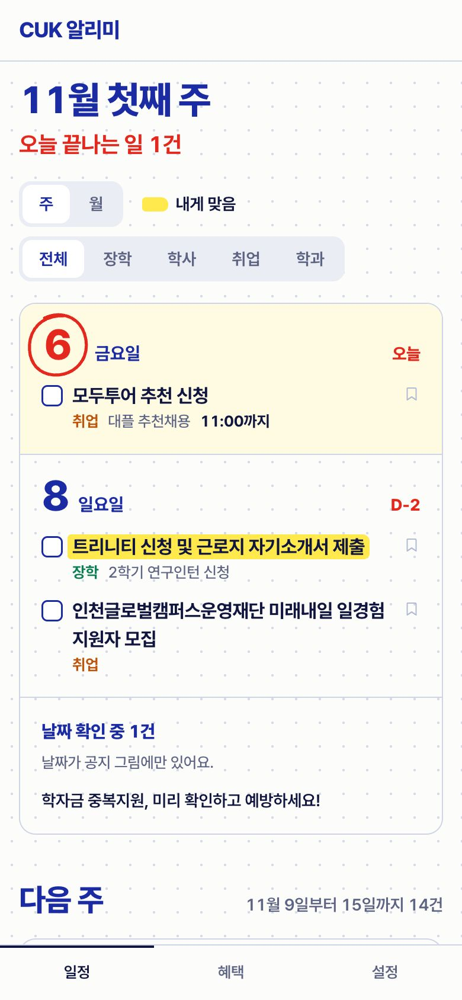

<title>알리미 홈 시안</title>
<meta name="claude:viewport-fit-sides" content="cover">
<meta charset="utf-8">
<link rel="stylesheet" href="https://fonts.googleapis.com/css2?family=Nanum+Pen+Script&display=swap">
<style>
/* 배치: 휴대폰 네 대를 한 줄에 세우고, 각 대 아래에 이름 한 줄과 사실 세 줄을 둔다. 화면 속 색은 앱의 것이라 테마를 따르지 않는다. */
:root{
  --bg:#f5f5f2; --fg:#16181d; --mute:#676c7a; --line:#dcdde2; --frame:#bfc2cb; --now:#16181d; --now-fg:#ffffff;
  --hl:#ffe94d; --alarm:#e5281e; --pen:#1b2ba3;
  --m-white:#ffffff; --m-ink:#17191f; --m-gray:#858a96; --m-hair:#eceef2; --m-box:#c3c7d0;
  --m-paper:#fbfbf8; --m-rule:#dfe3ef; --m-margin:#f0b4ae; --m-paper-ink:#1c1f33; --m-paper-gray:#70768f;
  --m-ground:#f2f2ed; --m-black:#141414; --m-chip:#e9e9e3; --m-chip-fg:#55564f; --m-ring:#cfcfc8;
  --font:"Pretendard Variable",Pretendard,-apple-system,BlinkMacSystemFont,"Apple SD Gothic Neo","Noto Sans KR",sans-serif;
  --hand:"Nanum Pen Script","Apple SD Gothic Neo",cursive;
}
@media (prefers-color-scheme: dark){
  :root:not([data-theme="light"]){ --bg:#121316; --fg:#ecedf0; --mute:#9a9fad; --line:#2b2d33; --frame:#3b3e47; --now:#ecedf0; --now-fg:#121316; color-scheme:dark }
}
:root[data-theme="dark"]{ --bg:#121316; --fg:#ecedf0; --mute:#9a9fad; --line:#2b2d33; --frame:#3b3e47; --now:#ecedf0; --now-fg:#121316; color-scheme:dark }

body{ background:var(--bg); color:var(--fg); font-family:var(--font); font-size:15px; line-height:1.55; letter-spacing:-0.01em;
  padding-left:max(16px, env(safe-area-inset-left, 0px)); padding-right:max(16px, env(safe-area-inset-right, 0px)); padding-block:36px 56px }
.wrap{ max-width:1500px; margin:0 auto; display:flex; flex-direction:column; gap:32px }
.intro{ display:flex; flex-direction:column; gap:8px; max-width:62ch }
.intro h1{ margin:0; font-size:26px; font-weight:700; letter-spacing:-0.03em; line-height:1.25; text-wrap:balance }
.intro p{ margin:0; color:var(--mute) }

.board{ display:grid; grid-template-columns:repeat(4, minmax(0,1fr)); gap:36px 28px; align-items:start }
@media (max-width:1180px){ .board{ grid-template-columns:repeat(2, minmax(0,1fr)) } }
@media (max-width:640px){ .board{ grid-template-columns:minmax(0,1fr) } }
figure{ margin:0; display:flex; flex-direction:column; gap:18px; align-items:center; min-width:0 }
.phone{ width:min(100%, 344px); aspect-ratio:390/844; position:relative; overflow:hidden; border-radius:30px;
  outline:1px solid var(--frame); outline-offset:0; background:var(--m-white); --scale:0.882 }
.phone img{ display:block; width:100% }
figcaption{ width:min(100%, 344px); display:flex; flex-direction:column; gap:10px }
.cap-head{ display:flex; align-items:baseline; gap:10px; flex-wrap:wrap }
.tag{ font-size:12px; font-weight:700; padding:2px 8px; border-radius:6px; border:1px solid var(--line); color:var(--mute) }
.tag.now{ background:var(--now); color:var(--now-fg); border-color:var(--now) }
figcaption h2{ margin:0; font-size:17px; font-weight:700; letter-spacing:-0.02em }
figcaption dl{ margin:0; display:grid; grid-template-columns:auto 1fr; gap:6px 14px; font-size:14px; border-top:1px solid var(--line); padding-top:10px }
figcaption dt{ color:var(--mute); white-space:nowrap }
figcaption dd{ margin:0; min-width:0 }
.foot{ margin:0; color:var(--mute); font-size:14px; max-width:70ch; border-top:1px solid var(--line); padding-top:16px }

/* ───── 화면 공통: 390×844로 그리고 틀 너비에 맞춰 줄인다 ───── */
.screen{ position:absolute; top:0; left:0; width:390px; height:844px; transform:scale(var(--scale)); transform-origin:0 0;
  font-family:var(--font); font-variant-numeric:tabular-nums; letter-spacing:-0.015em; line-height:1.35; overflow:hidden; word-break:keep-all }
.screen *{ margin:0; padding:0; box-sizing:border-box; list-style:none }
.screen mark{ color:inherit; background:none }
.screen svg{ display:block }

/* ───── A 조용한 도구 ───── */
.a{ background:var(--m-white); color:var(--m-ink) }
.a .a-top{ display:flex; justify-content:space-between; align-items:center; padding:20px 22px 0; color:var(--m-gray) }
.a .a-brand{ font-size:14px; font-weight:600; color:var(--m-ink) }
.a .a-date{ padding:26px 22px 0; font-size:27px; font-weight:700; letter-spacing:-0.035em; line-height:1.2 }
.a .a-sum{ padding:6px 22px 0; font-size:15px; color:var(--m-gray) }
.a .a-sum b{ font-weight:600; color:var(--m-ink) }
.a .a-lab{ margin:26px 22px 0; padding-bottom:9px; border-bottom:1px solid var(--m-hair); font-size:13px; font-weight:600; color:var(--m-gray); display:flex; justify-content:space-between }
.a .a-lab span{ font-weight:400 }
.a .a-list li{ display:grid; grid-template-columns:22px minmax(0,1fr) auto; column-gap:14px; align-items:start; padding:13px 22px 0 }
.a .a-box{ width:22px; height:22px; border:1.5px solid var(--m-box); border-radius:7px; margin-top:1px }
.a .a-t{ font-size:16.5px; font-weight:500; line-height:1.4 }
.a .a-t mark{ background:linear-gradient(transparent 52%, var(--hl) 52%, var(--hl) 94%, transparent 94%); padding:0 2px; margin:0 -2px; box-decoration-break:clone; -webkit-box-decoration-break:clone }
.a .a-m{ font-size:13px; color:var(--m-gray); margin-top:2px; display:flex; gap:6px; align-items:center }
.a .a-chk{ font-size:11px; font-weight:600; border:1px solid var(--m-box); border-radius:20px; padding:0 7px; line-height:17px }
.a .a-d{ text-align:right; font-size:13px; color:var(--m-gray); padding-top:2px; line-height:1.45 }
.a .a-d b{ display:block; font-weight:600; color:var(--m-ink) }
.a .a-d b.soon{ color:var(--alarm) }
.a .a-more{ position:absolute; left:0; right:0; bottom:68px; border-top:1px solid var(--m-hair) }
.a .a-more div{ display:flex; align-items:center; gap:8px; padding:0 22px; height:46px; font-size:14.5px; font-weight:500 }
.a .a-more div + div{ border-top:1px solid var(--m-hair) }
.a .a-more span{ color:var(--m-gray); font-weight:400; font-size:13px; margin-left:auto }
.a .a-more svg{ color:var(--m-box) }
.a .a-tabs{ position:absolute; left:0; right:0; bottom:0; height:68px; border-top:1px solid var(--m-hair); display:flex; background:var(--m-white) }
.a .a-tabs div{ flex:1; display:flex; flex-direction:column; align-items:center; justify-content:center; gap:4px; font-size:11px; font-weight:500; color:var(--m-gray) }
.a .a-tabs div.on{ color:var(--m-ink); font-weight:600 }

/* ───── B 플래너 종이 ───── */
.b{ background:var(--m-paper); color:var(--m-paper-ink); display:flex; flex-direction:column }
.b .b-sheet{ flex:1 }
.b .b-top{ display:flex; justify-content:space-between; padding:20px 20px 0; font-size:14px; font-weight:700; color:var(--pen) }
.b .b-top span + span{ font-weight:500; color:var(--m-paper-gray) }
.b .b-head{ padding:22px 20px 18px; display:flex; align-items:baseline; gap:14px }
.b .b-head h2{ font-size:30px; font-weight:800; letter-spacing:-0.035em; color:var(--pen); line-height:1.15 }
.b .hand{ font-family:var(--hand); color:var(--alarm); letter-spacing:0; line-height:1 }
.b .b-note{ font-size:27px; transform:rotate(-3deg); transform-origin:0 100% }
.b .b-sheet{ border-top:1px solid var(--m-rule);
  background:
    linear-gradient(to right, transparent 61px, var(--m-margin) 61px, var(--m-margin) 62px, transparent 62px),
    repeating-linear-gradient(to bottom, transparent 0, transparent 51px, var(--m-rule) 51px, var(--m-rule) 52px) }
.b .b-row{ display:grid; grid-template-columns:62px 18px minmax(0,1fr) 38px; column-gap:12px; padding-right:16px; min-height:52px; align-items:start }
.b .b-row.two{ min-height:104px }
.b .b-day{ position:relative; height:52px; display:flex; flex-direction:column; align-items:center; justify-content:center; column-gap:0; margin-right:-12px }
.b .b-day b{ font-size:22px; font-weight:700; color:var(--pen); line-height:24px; letter-spacing:-0.03em }
.b .b-day span{ font-size:11px; color:var(--m-paper-gray); line-height:13px }
.b .b-day svg{ position:absolute; left:8px; top:1px; width:46px; height:32px; color:var(--alarm) }
.b .b-box{ width:18px; height:18px; border:1.6px solid var(--pen); border-radius:4px; margin-top:9px }
.b .b-body{ padding-top:7px }
.b .b-t{ font-size:16px; font-weight:500; line-height:22px }
.b .b-row.two .b-t{ line-height:52px; margin-top:-15px }
.b .b-row.two .b-m{ margin-top:-15px }
.b .b-t mark{ background:var(--hl); padding:1px 5px 2px; margin:0 -5px; border-radius:3px 9px 4px 8px / 9px 3px 8px 4px; box-decoration-break:clone; -webkit-box-decoration-break:clone }
.b .b-m{ font-size:12px; color:var(--m-paper-gray); line-height:16px; display:flex; gap:6px; align-items:center }
.b .b-chk{ font-size:10.5px; font-weight:700; color:var(--pen); border:1px solid var(--pen); border-radius:20px; padding:0 6px; line-height:14px }
.b .b-left{ justify-self:end; padding-top:17px; font-size:12px; font-weight:600; color:var(--m-paper-gray) }
.b .b-left.hand{ padding-top:9px; font-size:29px; transform:rotate(-5deg) }
.b .b-week{ height:52px; padding:22px 16px 0 74px; font-size:13px; font-weight:700; color:var(--pen); display:flex; gap:8px; align-items:baseline }
.b .b-week span{ font-weight:500; color:var(--m-paper-gray) }
.b .b-fold{ height:52px; padding:0 16px 0 74px; display:flex; align-items:center; gap:8px; font-size:14.5px; font-weight:600; color:var(--pen) }
.b .b-fold span{ margin-left:auto; font-size:12.5px; font-weight:500; color:var(--m-paper-gray) }
.b .b-tabs{ position:absolute; left:0; right:0; bottom:0; height:58px; display:flex; background:var(--m-paper); border-top:1px solid var(--m-rule) }
.b .b-tabs div{ flex:1; display:flex; align-items:center; justify-content:center; font-size:14px; font-weight:500; color:var(--m-paper-gray); border-top:3px solid transparent; margin-top:-1px }
.b .b-tabs div.on{ color:var(--pen); font-weight:700; border-top-color:var(--pen) }

/* ───── C 형광펜 브랜드 ───── */
.c{ background:var(--m-ground); color:var(--m-black) }
.c .c-field{ background:var(--hl); padding:18px 20px 56px }
.c .c-top{ display:flex; align-items:center; gap:8px }
.c .c-top b{ font-size:18px; font-weight:800; letter-spacing:-0.04em }
.c .c-who{ margin-left:auto; font-size:12.5px; font-weight:700; border:1.5px solid var(--m-black); border-radius:20px; padding:3px 10px }
.c .c-say{ margin-top:30px; font-size:38px; font-weight:800; letter-spacing:-0.045em; line-height:1.12 }
.c .c-say em{ font-style:normal; box-shadow:inset 0 -7px 0 var(--m-black); padding:0 2px }
.c .c-sub{ margin-top:10px; font-size:14.5px; font-weight:600; opacity:.72 }
.c .c-cards{ margin:-34px 14px 0; display:flex; flex-direction:column; gap:9px }
.c .c-cards li{ background:var(--m-white); border-radius:18px; padding:13px 14px 13px 13px; display:grid; grid-template-columns:52px minmax(0,1fr) 30px; column-gap:13px; align-items:center }
.c .c-d{ width:52px; height:52px; border-radius:15px; display:flex; flex-direction:column; align-items:center; justify-content:center; background:var(--m-chip); color:var(--m-chip-fg); font-size:15px; font-weight:800; letter-spacing:-0.03em; line-height:1.1 }
.c .c-d small{ font-size:10.5px; font-weight:600; opacity:.8 }
.c li.mine .c-d{ background:var(--m-black); color:var(--hl) }
.c li.soon .c-d{ background:var(--alarm); color:var(--m-white) }
.c .c-t{ font-size:16.5px; font-weight:700; line-height:1.3; letter-spacing:-0.03em }
.c .c-m{ margin-top:4px; font-size:12.5px; font-weight:500; color:var(--m-chip-fg); display:flex; gap:6px; align-items:center }
.c .c-mine{ background:var(--hl); color:var(--m-black); font-style:normal; font-size:11px; font-weight:700; border-radius:5px; padding:1px 6px }
.c .c-ok{ width:30px; height:30px; border:1.6px solid var(--m-ring); border-radius:50% }
.c .c-more{ margin:14px 20px 0; display:flex; align-items:center; gap:8px; font-size:14px; font-weight:700 }
.c .c-more span{ margin-left:auto; font-weight:500; color:var(--m-chip-fg); font-size:12.5px }
.c .c-nav{ position:absolute; left:50%; bottom:18px; transform:translateX(-50%); height:56px; border-radius:28px; background:var(--m-black); display:flex; align-items:center; gap:6px; padding:0 8px }
.c .c-nav div{ white-space:nowrap; height:40px; padding:0 16px; border-radius:20px; display:flex; align-items:center; gap:7px; color:var(--m-white); font-size:13px; font-weight:600 }
.c .c-nav div.on{ background:var(--hl); color:var(--m-black); font-weight:800 }
</style>

<main class="wrap">
  <div class="intro">
    <h1>같은 날 같은 데이터로 그린 첫 화면 넷</h1>
    <p>11월 6일 금요일, 시험 계정(경영학과 2학년, 기본 관심 주제)이 휴대폰으로 열었을 때입니다. 맨 왼쪽이 지금 화면이고 나머지 셋이 시안입니다.</p>
  </div>

  <section class="board">

    <!-- 지금 -->
    <figure>
      <div class="phone"></div>
      <figcaption>
        <div class="cap-head"><span class="tag now">지금</span><h2>주간 판</h2></div>
        <dl>
          <dt>첫 화면의 일</dt><dd>3개. 관심 주제에 드는 것은 1개</dd>
          <dt>닮은 것</dt><dd>스터디 플래너</dd>
          <dt>걸리는 점</dt><dd>제목과 필터가 화면 위 절반을 쓰고, 글자가 전부 굵은 남색</dd>
        </dl>
      </figcaption>
    </figure>

    <!-- A -->
    <figure>
      <div class="phone">
        <div class="screen a">
          <div class="a-top">
            <span class="a-brand">CUK 알리미</span>
            <svg width="22" height="22" viewBox="0 0 24 24" fill="none" stroke="currentColor" stroke-width="1.6" stroke-linecap="round"><circle cx="12" cy="8.5" r="3.6"/><path d="M4.8 20c.9-3.6 3.8-5.4 7.2-5.4s6.3 1.8 7.2 5.4"/></svg>
          </div>
          <h2 class="a-date">11월 6일 금요일</h2>
          <p class="a-sum">이번 주 내 마감 <b>1건</b>, 다음 주 <b>3건</b></p>

          <h3 class="a-lab">이번 주</h3>
          <ul class="a-list">
            <li><i class="a-box"></i><div><p class="a-t"><mark>하나장학생 트리니티 신청</mark></p><p class="a-m">장학 · 2학기 연구인턴</p></div><div class="a-d"><b class="soon">D-2</b>일 8</div></li>
          </ul>

          <h3 class="a-lab">다음 주</h3>
          <ul class="a-list">
            <li><i class="a-box"></i><div><p class="a-t"><mark>겨울 계절학기 수강신청</mark></p><p class="a-m">학사</p></div><div class="a-d"><b>D-4</b>화 10</div></li>
            <li><i class="a-box"></i><div><p class="a-t"><mark>국가근로장학금 재단 희망근로지 신청</mark></p><p class="a-m">장학 · 2학기 추가신청</p></div><div class="a-d"><b>D-6</b>목 12</div></li>
            <li><i class="a-box"></i><div><p class="a-t">푸른등대 기부장학금 2차 신청</p><p class="a-m">장학 <span class="a-chk">확인</span></p></div><div class="a-d"><b>D-6</b>목 12</div></li>
          </ul>

          <h3 class="a-lab">이달 안</h3>
          <ul class="a-list">
            <li><i class="a-box"></i><div><p class="a-t"><mark>1학기 예비 수강신청</mark></p><p class="a-m">학사</p></div><div class="a-d"><b>D-13</b>목 19</div></li>
            <li><i class="a-box"></i><div><p class="a-t"><mark>2학기 공결 신청</mark></p><p class="a-m">학사</p></div><div class="a-d"><b>D-19</b>수 25</div></li>
          </ul>

          <div class="a-more">
            <div>관심 밖 10건<span>학점교류 7 · 취업 3</span><svg width="16" height="16" viewBox="0 0 16 16" fill="none" stroke="currentColor" stroke-width="1.8" stroke-linecap="round" stroke-linejoin="round"><path d="M6 3.5 10.5 8 6 12.5"/></svg></div>
            <div>날짜 확인 중 1건<span>그림에만 날짜가 있는 공지</span><svg width="16" height="16" viewBox="0 0 16 16" fill="none" stroke="currentColor" stroke-width="1.8" stroke-linecap="round" stroke-linejoin="round"><path d="M6 3.5 10.5 8 6 12.5"/></svg></div>
          </div>
          <div class="a-tabs">
            <div class="on"><svg width="22" height="22" viewBox="0 0 24 24" fill="none" stroke="currentColor" stroke-width="1.8" stroke-linecap="round" stroke-linejoin="round"><rect x="4" y="5" width="16" height="15" rx="3.5"/><path d="M4 10h16M8.5 3v3.5M15.5 3v3.5"/></svg>일정</div>
            <div><svg width="22" height="22" viewBox="0 0 24 24" fill="none" stroke="currentColor" stroke-width="1.8" stroke-linecap="round" stroke-linejoin="round"><path d="M4 12.2V5.5A1.5 1.5 0 0 1 5.5 4h6.7l8 8-7.9 8.2z"/><circle cx="8.6" cy="8.6" r="1.3"/></svg>혜택</div>
            <div><svg width="22" height="22" viewBox="0 0 24 24" fill="none" stroke="currentColor" stroke-width="1.8" stroke-linecap="round"><path d="M5 7h9M18 7h1M5 12h2M11 12h8M5 17h9M18 17h1"/><circle cx="16" cy="7" r="2"/><circle cx="9" cy="12" r="2"/><circle cx="16" cy="17" r="2"/></svg>설정</div>
          </div>
        </div>
      </div>
      <figcaption>
        <div class="cap-head"><span class="tag">A</span><h2>조용한 도구</h2></div>
        <dl>
          <dt>첫 화면의 일</dt><dd>6개. 전부 관심 주제</dd>
          <dt>닮은 것</dt><dd>Things</dd>
          <dt>걸리는 점</dt><dd>읽기는 가장 편하지만 어느 서비스인지 기억에 남는 요소는 형광펜 하나뿐</dd>
        </dl>
      </figcaption>
    </figure>

    <!-- B -->
    <figure>
      <div class="phone">
        <div class="screen b">
          <div class="b-top"><span>CUK 알리미</span><span>내 계정</span></div>
          <div class="b-head"><h2>11월 첫째 주</h2><p class="hand b-note">이번 주 마감 1건</p></div>
          <div class="b-sheet">
            <div class="b-row">
              <div class="b-day"><svg viewBox="0 0 46 32" fill="none" stroke="currentColor" stroke-width="1.9" stroke-linecap="round"><path d="M25 3.2C13.5 1.6 4.2 7.3 3.4 15.6 2.6 24 10.6 29.6 22.4 29.4c11.6-.2 20.5-6 20.3-14.4C42.5 7.6 34.5 3 22 4.4"/></svg><b>8</b><span>일</span></div>
              <i class="b-box"></i>
              <div class="b-body"><p class="b-t"><mark>하나장학생 트리니티 신청</mark></p><p class="b-m">장학 · 2학기 연구인턴</p></div>
              <span class="b-left hand">D-2</span>
            </div>
            <div class="b-week">다음 주<span>9일부터 15일</span></div>
            <div class="b-row">
              <div class="b-day"><b>10</b><span>화</span></div><i class="b-box"></i>
              <div class="b-body"><p class="b-t"><mark>겨울 계절학기 수강신청</mark></p><p class="b-m">학사</p></div>
              <span class="b-left">D-4</span>
            </div>
            <div class="b-row two">
              <div class="b-day"><b>12</b><span>목</span></div><i class="b-box"></i>
              <div class="b-body"><p class="b-t"><mark>국가근로장학금 재단 희망근로지 신청</mark></p><p class="b-m">장학 · 2학기 추가신청</p></div>
              <span class="b-left">D-6</span>
            </div>
            <div class="b-row">
              <div class="b-day"></div><i class="b-box"></i>
              <div class="b-body"><p class="b-t">푸른등대 기부장학금 2차 신청</p><p class="b-m">장학 <span class="b-chk">확인</span></p></div>
              <span class="b-left"></span>
            </div>
            <div class="b-week">이달 안<span>16일부터 30일</span></div>
            <div class="b-row">
              <div class="b-day"><b>19</b><span>목</span></div><i class="b-box"></i>
              <div class="b-body"><p class="b-t"><mark>1학기 예비 수강신청</mark></p><p class="b-m">학사</p></div>
              <span class="b-left">D-13</span>
            </div>
            <div class="b-row">
              <div class="b-day"><b>25</b><span>수</span></div><i class="b-box"></i>
              <div class="b-body"><p class="b-t"><mark>2학기 공결 신청</mark></p><p class="b-m">학사</p></div>
              <span class="b-left">D-19</span>
            </div>
            <div class="b-fold">그 밖의 일 10건<span>학점교류 7 · 취업 3</span></div>
            <div class="b-fold">날짜 확인 중 1건<span>그림에만 날짜가 있는 공지</span></div>
            <div class="b-row"></div>
          </div>
          <div class="b-tabs"><div class="on">일정</div><div>혜택</div><div>설정</div></div>
        </div>
      </div>
      <figcaption>
        <div class="cap-head"><span class="tag">B</span><h2>플래너 종이</h2></div>
        <dl>
          <dt>첫 화면의 일</dt><dd>6개. 전부 관심 주제</dd>
          <dt>닮은 것</dt><dd>스터디 플래너 속지. 지금 콘셉트를 줄, 여백선, 빨간 펜까지 밀어붙인 것</dd>
          <dt>걸리는 점</dt><dd>손글씨와 종이 질감은 취향을 타고, 공문 같은 긴 이름과 부딪힐 수 있음</dd>
        </dl>
      </figcaption>
    </figure>

    <!-- C -->
    <figure>
      <div class="phone">
        <div class="screen c">
          <div class="c-field">
            <div class="c-top">
              <svg width="26" height="26" viewBox="0 0 26 26"><rect width="26" height="26" rx="8" fill="var(--m-black)"/><path d="M7.5 13.4l3.7 3.7 7.3-8.4" fill="none" stroke="var(--hl)" stroke-width="2.8" stroke-linecap="round" stroke-linejoin="round"/></svg>
              <b>알리미</b>
              <span class="c-who">경영 2학년</span>
            </div>
            <p class="c-say">이번 주<br>내 마감 <em>1건</em></p>
            <p class="c-sub">다음 주 3건 · 이달 안 2건</p>
          </div>
          <ul class="c-cards">
            <li class="mine soon"><span class="c-d">D-2<small>일 8</small></span><div><p class="c-t">하나장학생 트리니티 신청</p><p class="c-m"><i class="c-mine">내게 맞음</i>장학</p></div><i class="c-ok"></i></li>
            <li class="mine"><span class="c-d">D-4<small>화 10</small></span><div><p class="c-t">겨울 계절학기 수강신청</p><p class="c-m"><i class="c-mine">내게 맞음</i>학사</p></div><i class="c-ok"></i></li>
            <li class="mine"><span class="c-d">D-6<small>목 12</small></span><div><p class="c-t">국가근로장학금 재단 희망근로지 신청</p><p class="c-m"><i class="c-mine">내게 맞음</i>장학</p></div><i class="c-ok"></i></li>
            <li><span class="c-d">D-6<small>목 12</small></span><div><p class="c-t">푸른등대 기부장학금 2차 신청</p><p class="c-m">장학 · 자격은 원문 확인</p></div><i class="c-ok"></i></li>
            <li class="mine"><span class="c-d">D-13<small>목 19</small></span><div><p class="c-t">1학기 예비 수강신청</p><p class="c-m"><i class="c-mine">내게 맞음</i>학사</p></div><i class="c-ok"></i></li>
          </ul>
          <div class="c-more">관심 밖 10건 보기<span>학점교류 7 · 취업 3</span></div>
          <div class="c-nav">
            <div class="on"><svg width="18" height="18" viewBox="0 0 24 24" fill="none" stroke="currentColor" stroke-width="2.2" stroke-linecap="round" stroke-linejoin="round"><rect x="4" y="5" width="16" height="15" rx="3.5"/><path d="M4 10h16"/></svg>일정</div>
            <div><svg width="18" height="18" viewBox="0 0 24 24" fill="none" stroke="currentColor" stroke-width="2" stroke-linecap="round" stroke-linejoin="round"><path d="M4 12.2V5.5A1.5 1.5 0 0 1 5.5 4h6.7l8 8-7.9 8.2z"/></svg>혜택</div>
            <div><svg width="18" height="18" viewBox="0 0 24 24" fill="none" stroke="currentColor" stroke-width="2" stroke-linecap="round"><circle cx="12" cy="8.5" r="3.6"/><path d="M4.8 20c.9-3.6 3.8-5.4 7.2-5.4s6.3 1.8 7.2 5.4"/></svg>설정</div>
          </div>
        </div>
      </div>
      <figcaption>
        <div class="cap-head"><span class="tag">C</span><h2>형광펜 브랜드</h2></div>
        <dl>
          <dt>첫 화면의 일</dt><dd>5개. 전부 관심 주제</dd>
          <dt>닮은 것</dt><dd>쿠링, 투두메이트</dd>
          <dt>걸리는 점</dt><dd>한눈에 기억되지만 카드라 한 화면에 들어가는 수가 가장 적음</dd>
        </dl>
      </figcaption>
    </figure>

  </section>

  <p class="foot">세 시안은 같은 규칙으로 그렸습니다. 관심 주제 밖인 학점교류 7건과 취업 3건은 한 줄로 접었고, 지난 날의 빈칸과 종류 필터는 없앴습니다. 행 이름은 11월 6일 이후 서버가 만드는 이름을 썼습니다. 휴대폰 첫 화면만 그렸고 데스크톱과 설정 화면은 방향이 정해지면 이어서 그립니다.</p>
</main>

<script>
(function(){
  var phones = document.querySelectorAll('.phone');
  function fit(el){ el.style.setProperty('--scale', (el.clientWidth / 390).toFixed(4)); }
  phones.forEach(fit);
  if (window.ResizeObserver){ var ro = new ResizeObserver(function(es){ es.forEach(function(e){ fit(e.target); }); }); phones.forEach(function(p){ ro.observe(p); }); }
  else { window.addEventListener('resize', function(){ phones.forEach(fit); }); }
})();
</script>
